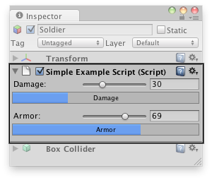

Editor
Namespace: UnityEditor
/
Inherits from: ScriptableObject
Suggest a change
Success!
Thank you for helping us improve the quality of Unity Documentation. Although we cannot accept all submissions, we do read each suggested change from our users and will make updates where applicable.
Close
Sumbission failed
For some reason your suggested change could not be submitted. Please try again in a few minutes. And thank you for taking the time to help us improve the quality of Unity Documentation.
Close
Switch to Manual
Description
Base class to derive custom Editors from. Use this to create your own custom inspectors and editors for your objects.
Consider a script MyPlayer with variables for armor, damage, and a reference to a gun GameObject:
#pragma strict
// This is not an editor script.
public var armor = 75;
public var damage = 25;
public var gun;
function Update() {
// Update logic here...
}
using UnityEngine;
using System.Collections;
// This is not an editor script.
public class ExampleClass : MonoBehaviour {
public int armor = 75;
public int damage = 25;
public GameObject gun;
function Update () {
// Update logic here...
}
}
Using a custom Editor, the apperance of the script in the Inspector can be changed, for example to look like this:

Custom editor in the Inspector.
You can attach the Editor to a custom component by using the CustomEditor attribute.
There are multiple ways to design custom Editors.
If you want the Editor to support multi-object editing, you can use the CanEditMultipleObjects attribute.
Instead of modifying script variables directly, it's advantageous to use the SerializedObject and SerializedProperty
system to edit them, since this automatically handles multi-object editing, undo, and prefab overrides. If this approach is used a user can select multiple assets in the heirarchy window and change the values for all of them at once.
// Custom Editor using SerializedProperties.
// Automatic handling of multi-object editing, undo, and prefab overrides.
#pragma strict
@CustomEditor(MyPlayer)
@CanEditMultipleObjects
class MyPlayerEditor extends Editor {
var damageProp : SerializedProperty;
var armorProp : SerializedProperty;
var gunProp : SerializedProperty;
function OnEnable () {
// Setup the SerializedProperties
damageProp = serializedObject.FindProperty ("damage");
armorProp = serializedObject.FindProperty ("armor");
gunProp = serializedObject.FindProperty ("gun");
}
function OnInspectorGUI() {
// Update the serializedProperty - always do this in the beginning of OnInspectorGUI.
serializedObject.Update ();
// Show the custom GUI controls
EditorGUILayout.IntSlider (damageProp, 0, 100, new GUIContent ("Damage"));
// Only show the damage progress bar if all the objects have the same damage value:
if (!damageProp.hasMultipleDifferentValues)
ProgressBar (damageProp.intValue / 100.0, "Damage");
EditorGUILayout.IntSlider (armorProp, 0, 100, new GUIContent ("Armor"));
// Only show the armor progress bar if all the objects have the same armor value:
if (!armorProp.hasMultipleDifferentValues)
ProgressBar (armorProp.intValue / 100.0, "Armor");
EditorGUILayout.PropertyField (gunProp, new GUIContent ("Gun Object"));
// Apply changes to the serializedProperty - always do this in the end of OnInspectorGUI.
serializedObject.ApplyModifiedProperties ();
}
// Custom GUILayout progress bar.
function ProgressBar (value : float, label : String) {
// Get a rect for the progress bar using the same margins as a textfield:
var rect : Rect = GUILayoutUtility.GetRect (18, 18, "TextField");
EditorGUI.ProgressBar (rect, value, label);
EditorGUILayout.Space ();
}
}
Alternatively, if automatic handling of multi-object editing, undo,
and prefab overrides is not needed, the script variables can be
modified directly by the editor without using the SerializedObject
and SerializedProperty system, as in the example below.
// Custom Editor the "old" way by modifying the script variables directly.
// No handling of multi-object editing, undo, and prefab overrides!
@CustomEditor (MyPlayer)
class MyPlayerEditor extends Editor {
function OnInspectorGUI () {
target.damage = EditorGUILayout.IntSlider ("Damage", target.damage, 0, 100);
ProgressBar (target.damage / 100.0, "Damage");
target.armor = EditorGUILayout.IntSlider ("Armor", target.armor, 0, 100);
ProgressBar (target.armor / 100.0, "Armor");
var allowSceneObjects : boolean = !EditorUtility.IsPersistent (target);
target.gun = EditorGUILayout.ObjectField ("Gun Object", target.gun, GameObject, allowSceneObjects);
}
// Custom GUILayout progress bar.
function ProgressBar (value : float, label : String) {
// Get a rect for the progress bar using the same margins as a textfield:
var rect : Rect = GUILayoutUtility.GetRect (18, 18, "TextField");
EditorGUI.ProgressBar (rect, value, label);
EditorGUILayout.Space ();
}
}
Variables
| serializedObject | A SerializedObject representing the object or objects being inspected. |
| target | The object being inspected. |
| targets | An array of all the object being inspected. |
Public Functions
| DrawDefaultInspector | Draw the built-in inspector. |
| DrawHeader | Call this function to draw the header of the editor. |
| DrawPreview | The first entry point for Preview Drawing. |
| GetInfoString | Implement this method to show asset information on top of the asset preview. |
| GetPreviewTitle | Override this method if you want to change the label of the Preview area. |
| HasPreviewGUI | Override this method in subclasses if you implement OnPreviewGUI. |
| OnInspectorGUI | Implement this function to make a custom inspector. |
| OnInteractivePreviewGUI | Implement to create your own interactive custom preview. Interactive custom previews are used in the preview area of the inspector and the object selector. |
| OnPreviewGUI | Implement to create your own custom preview for the preview area of the inspector, primary editor headers and the object selector. |
| OnPreviewSettings | Override this method if you want to show custom controls in the preview header. |
| RenderStaticPreview | Override this method if you want to render a static preview that shows. |
| Repaint | Repaint any inspectors that shows this editor. |
| RequiresConstantRepaint | Does this edit require to be repainted constantly in its current state? |
| UseDefaultMargins | Override this method in subclasses to return false if you don't want default margins. |
Static Functions
| CreateCachedEditor | On return previousEditor is an editor for targetObject or targetObjects. The function either returns if the editor is already tracking the objects, or Destroys the previous editor and creates a new one. |
| CreateEditor | Make a custom editor for targetObject or targetObjects. |
Messages
| OnSceneGUI | Lets the Editor handle an event in the scene view. |
Inherited members
Variables
| hideFlags | Should the object be hidden, saved with the scene or modifiable by the user? |
| name | The name of the object. |
Static Functions
| Destroy | Removes a gameobject, component or asset. |
| DestroyImmediate | Destroys the object obj immediately. You are strongly recommended to use Destroy instead. |
| DontDestroyOnLoad | Makes the object target not be destroyed automatically when loading a new scene. |
| FindObjectOfType | Returns the first active loaded object of Type type. |
| FindObjectsOfType | Returns a list of all active loaded objects of Type type. |
| Instantiate | Clones the object original and returns the clone. |
| CreateInstance | Creates an instance of a scriptable object with className. |
Operators
| bool | Does the object exist? |
| operator != | Compares if two objects refer to a different object. |
| operator == | Compares if two objects refer to the same. |
Messages
| OnDestroy | This function is called when the scriptable object will be destroyed. |
| OnDisable | This function is called when the scriptable object goes out of scope. |
| OnEnable | This function is called when the object is loaded. |